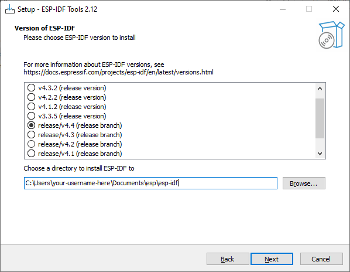
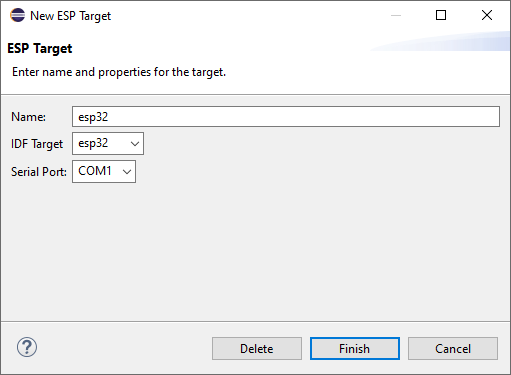
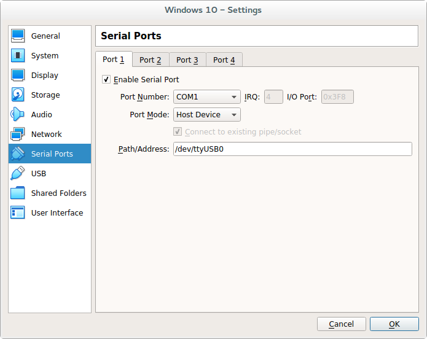

How to get started with GrowNode on Windows 10 and Windows 11 - Easy version
Updated on January 21, 2022
Introduction
With this step-by-step tutorial you will be able to quickly deploy the Eclipse IDE with the GrowNode development environment on your Windows 10/11 workstation.
Despite the whole process is very simple, at the end of the tutorial you will have:
- installed the Eclipse IDE
- installed the ESP-IDF plugin for Eclipse
- installed the latest ESP-IDFv4.4 environment
- compiled and run your first GrowNode test board via Eclipse
Notes:
- Only 64 bit operating systems are supported
- The same steps should also apply for Windows 7 64 bit, but we haven't tried yet. Let us know if you did!
- This procedure could be also used to create a Windows virtual machine to play with GrowNode without affecting your system. Read more details on this in the Appendix below.
Prerequisites
- at least 6.5 Gb free space on hard drive
- at least 4 Gb RAM
- an ESP32 board with USB cable
The ESP32 board could be a ready-to-use one (like the Wemos D1 R32), or other more compact ones that need some soldering (like the ESP32-DevKitC V4 and D1 Mini ESP32).
Step 1: Download and run the ESP-IDF online installer
Download the ESP-IDF online installer from https://dl.espressif.com/dl/esp-idf/?idf=4.4
The online installer is a small program that triggers the download of the needed software. Alternatively, if you need to install the GrowNode environment on a machine without internet connection, you can also download the offline installer.
Run the installer, accept the terms and conditions, and follow these steps:
- if suggested, click on "Apply Fixes" in the "Pre-installation system check" window (this requires Administrator rights, which you probably have, and will open another window asking for permission)

- at the end of the fixing procedure, click on "Next"
- select "Download ESP-IDF" from the list and then click on "Next"
-
select the most recent version 4.4 from the list (the first "4.4" appearing from top) and then "Browse" to the directory where you want to install ESP-IDF. We suggest to use the folder
Documents\esp\esp-idf, as in figure. Then click on "Next"ESP-IDF is continuosly being updated, so the last 4.4 version could be different from the one shown in the following figure.

- click again on "Next", leaving unchanged the ESP-IDF Tools folder
- click again on "Next", leaving unchanged the proposed "Full installation"
- click on "Install"
- click on "Yes" and "Install" on the popup windows that will appear during the installation process. The installation may require a bit depending on your internet connection
- in the last window ("Completing the ESP-IDF...") leave only the last flag selected, as in figure, and click on "Finish"

- click on "Yes" on the permission popup window (if any appears)
Step 2: Download GrowNode and build it
- launch Eclipse and in the popup window that appears select the parent folder of the ESP-IDF installation (in our case here
Documents\esp). You can also flag "Use this as the default..." if you don't plan to use other workspaces

- click on "Launch"
- close the "Welcome" tab
- select "Import..." from the menu "File"
- select "Projects from Git" in the "Git" folder
- select "Clone URI" and click on "Next >"
- write
https://github.com/ogghst/grownode.gitinto the "URI" field, anche click on "Next >" - select at least the branch called "master", as in figure, and click on "Next >"

- indicate as "Destination Directory" a
grownodefolder located in the parent of the ESP-IDF installation (in our case hereDocuments\esp) and tick the "Clone submodules" flag, as in figure. Then click on "Next >"

- when some downloads end, leave the selection "Import existing Eclipse projects" and click on "Next >"
- select only the "grownode" project, as in figure, and click on "Finish"

...and here you go! GrowNode is imported into Eclipse. Well done!
Try your first build by clicking on the hammer icon at the top left, or typing CTRL+B.
In the console at the bottom you should see your project compiling and ending with the message Build complete (0 errors.... That means it was successful. Great!
Step 3: Flash your board from Eclipse
Before flashing you must complete some configuration steps:
- click on the setting gear beside "esp32" in the top icon bar (see point 1 in figure)

- select the right "Serial Port" from the list (most probably
COM1) and click on "Finish"

Now plug your board into the USB port and click on the green play icon on the top left, or type CTRL+F11. Eclipse will start the flashing procedure (it's possible it will re-build the project before) and if everything goes well you should see the following message:
Leaving...
Hard resetting via RTS pin...
Executing action: flash
Running ninja in directory /home/your-username-here/esp/grownode/build
Executing "ninja flash"...
Did you?! Yes? Perfect! Congratulations!
If the answer is no, probably you need to manually set the serial port speed and re-trigger the flashing procedure:
- click on the setting gear beside "grownode" in the top icon bar (see point 2 in the figure above)
-
in the "Arguments" section add the following bold parameter exactly in the same position:
idf.py-b 115200-p /dev/your-serial-device-id flash
Step 4: Monitor the serial output of your board from Eclipse
To start the ESP-IDF monitor click on the icon "Open a Terminal" in the top icon bar (see point 1 in figure below). Check the correctness of the serial port and then click on "Ok". The board will restart you you will see the "blinking" messages.
To stop the monitor, just close the "Terminal" window or click on the red "Disconnect Terminal Connection" at the top right of the terminal itself (point 2 in figure below).

Great job! You are ready to play more with GrowNode ;)
Appendix: Installing GrowNode into a Windows virtual machine using VirtualBox
If you wish to create a new Windows virtual machine (VM) from scratch using VirtualBox just to have a try of GrowNode without affecting your system, you can still install the software environment inside the VM following the instructions of this page.
How to create a Windows VM using VirtualBox is out of scope here. You can find many guides about this topic on the web.
When working inside a VM you have to be aware of the following issues/requirements in order to be able to flash and properly work with your board:
- you must link the host serial device to a VM serial device
- you must plug the board via USB BEFORE starting the VM
- you should never unplug the board while the VM is running
- you will probably need to manually set the flashing baud rate to 115200 baud (as explained at the end of Step 3 above)
Properly link the host and guest serial ports
In VirtualBox, open the "Serial Ports" tab of the VM settings, shown in figure.

To properly set the serial communication, you have to:
- flag "Enable Serial Port"
- select the "Port Number" from the list (
COM1will be ok in most cases) - select "Host Device" in "Port Mode"
- write the name of the host serial port into the "Path/Address" field